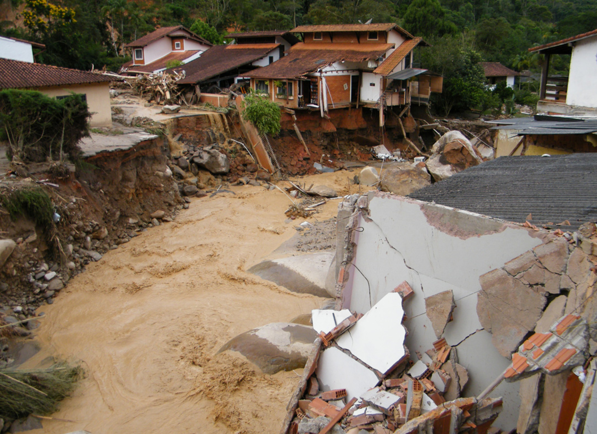
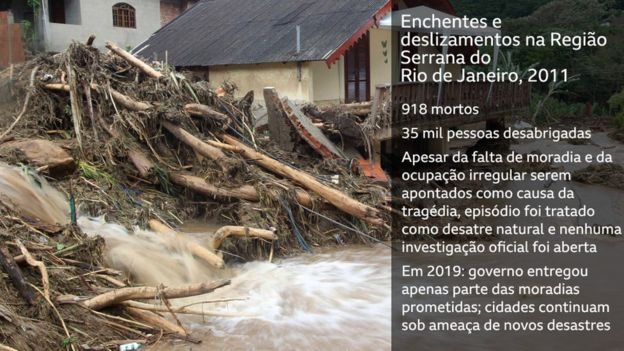

O desastre: Entre os incontáveis desastres envolvendo enchentes e deslizamentos em metrópoles brasileiras, os episódios no início de janeiro de 2011 no Rio de Janeiro marcaram pelo tamanho da tragédia e pelas cenas desesperadoras de pessoas ilhadas pela chuva.
Uma sequência de fortes chuvas atingiu a região serrana do Estado causando deslizamentos e inundações em dezenas de municípios, deixando 918 mortos e cerca de 30 mil pessoas desalojadas e desabrigadas. Isso foi equivalente a 50% das mortes em desastres naturais nos 20 anos anteriores (entre 1991 e 2010, foram 1.783 mortes em 28 desastres).
Isso sem contar as milhares de pessoas afetadas de outras formas, como as que contraíram leptospirose por causa das inundações. Cidades como Teresópolis, Nova Friburgo, Bom Jardim, Petrópolis, Sumidouro, Areal e São José do Vale do Rio Preto decretaram estado de calamidade pública. A Defesa Civil estadual, as prefeituras e a Força Nacional empregaram mais de mil pessoas para lidar com a situação.
Segundo uma estimativa do Banco Mundial publicada em 2012, a tragédia gerou um prejuízo de cerca de R$ 4,8 bilhões, entre custos de reparação de encanamentos e canais de drenagem, danos a infraestrutura de energia, gastos com reconstruções de ruas e rodovias, prejuízos para o comércio e danos a propriedades particulares, entre outros.
Como estão as vítimas em 2019: Nas regiões atingidas há até hoje sinais da devastação de oito anos atrás. As moradias prometidas para retirar a população da região de risco não foram totalmente entregues.
O que apontaram as investigações: Causada pela junção das fortes chuvas com a ocupação irregular de encostas e várzeas de rios - que, apontam especialistas, é resultado do déficit habitacional - a tragédia foi agravada pela falta de prevenção nas cidades afetadas, cujas administrações alegaram falta de tempo para tomar as medidas necessárias.
O temporal havia sido previsto pelo Instituto Nacional de Meteorologia (Inmet), mas a Defesa Civil estadual ignorou os alertas, segundo uma reportagem do jornal Folha de S. Paulo na época.